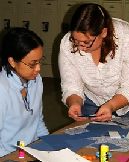

What kinds of programs do we offer? The kinds that fit your unique interests and needs!
Below are listed some of the kinds of participants with which we have worked.
Our programs are developed especially for YOU!
Community Programs
Especially for: Clubs, Enrichment/After School Programs, Church Groups, Social Groups, Parties, Special Events
Sample programs include: "Freeing Your Creative Spirit" (which includes spontaneous painting, collage and writing, handmade card-making, and "Collaborating with the Creator")
Special Community Programs
Especially for groups working together towards personal development and social change, such as: Mental Health, Recovery and Wellness groups, Shelter and Transitional Housing residents, Group Counseling and Support Groups, and LGBTQI groups.
Especially for: Organizations that wish to build creative skills to better support their missions and the people they serve.
Sample programs include: "Adult Recess," Preventing vicarious trauma and burnout, consensus-based decision-making, diversity and bias awareness, and team-building.
Private Instruction
Especially for: YOU (and perhaps a friend, too)!
The sky's the limit! Sample programs include: oil painting, encaustic painting, altered book-making,
mixed-media, altered art and sculpture, collage and creative writing.